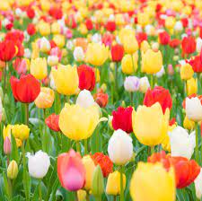

FLOWERS
1. Tulip
2. Orchid
3. Iris
4. Poppy
5. Daisy
6. Snowdrop
7. Chrysanthemum
8. Dahlia
9. Narcissus
10. Carnation
1. Tulip

Tulips are a genus of spring-blooming perennial herbaceous bulbiferous geophytes.
The flowers are usually large, showy and brightly coloured, generally red, pink, yellow, or white.
They often have a different coloured blotch at the base of the tepals, internally.
2. Orchid
Orchids are plants that belong to the family Orchidaceae, a diverse and widespread group of flowering plants with blooms that are often colourful and fragrant.
Orchidaceae is one of the two largest families of flowering plants, along with the Asteraceae.
3. Iris
It has the common name of 'Kashmir Iris'.
In India and Kashmir, it is known as 'Mazamond', 'Mazarmund', or 'safed mazarmond'.
In floriography, the iris flower symbolises faith, courage, valour, hope and wisdom.
4. Poppy
The flowers of the opium poppy are typically described as having a sweet, floral scent that is somewhat spicy or earthy.
Some people describe the scent as similar to that of almonds or vanilla.
5. Daisy
As a flower, daisies symbolize innocence, purity, loyalty, patience, and simplicity.
The classic white daisy is associated with humility, while the more rare blue Marguerite daisy hints at openness and peace.
6. Snowdrop
Galanthus, or snowdrop, is a small genus of approximately 20 species of bulbous perennial herbaceous plants in the family Amaryllidaceae.
The plants have two linear leaves and a single small white drooping bell-shaped flower with six petal-like tepals in two circles.
7. Chrysanthemum

Chrysanthemums, sometimes called mums or chrysanths, are flowering plants of the genus Chrysanthemum in the family Asteraceae.
They are native to East Asia and northeastern Europe.
Most species originate from East Asia and the center of diversity is in China.
8. Dahlia
Dahlia is a genus of bushy, tuberous, herbaceous perennial plants native to Mexico and Central America.
A member of the Asteraceae family of dicotyledonous plants, its relatives thus include the sunflower, daisy, chrysanthemum, and zinnia.
9.Narcissus
Narcissus is a genus of predominantly spring flowering perennial plants of the amaryllis family, Amaryllidaceae.
Various common names including daffodil, narcissus and jonquil, are used to describe all or some members of the genus.
10. Carnation
Dianthus caryophyllus, commonly known as the carnation or clove pink, is a species of Dianthus native to the Mediterranean region.
Its exact natural range is uncertain due to extensive cultivation over the last 2,000 years.